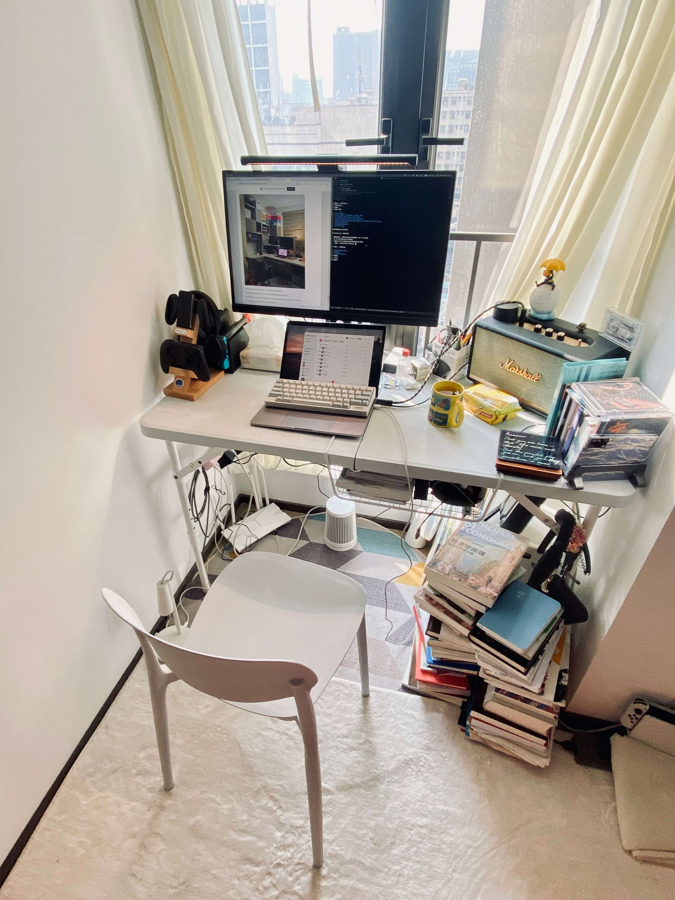

Zine#21
2025 年了，新年快乐~
好不容易把积攒的链接整理完了，又拖了很久。
新的一年希望你都顺利啦，这期的内容比较多，希望你看得开心~
Best wishes ｡:.ﾟヽ(*´∀`)ﾉﾟ.:｡
News | Article
Chrome's 2024 recap for devs
Chrome 2024 年开发者回顾：
- Chrome 中的内置 AI 通过 Gemini 为开发者提供强大的功能
- 通过 WebAssembly（Wasm）和 WebGPU 增强设备上的 AI
- Chrome DevTools 集成 AI
- View Transition API 使网站的连接感比以往任何时候都更强，导航更加顺畅
- The CSS anchor positioning API 实现无需 JavaScript 的交互式覆盖
- Speculation Rules API 通过预渲染页面解锁近乎即时的导航
- Interaction to Next Paint (INP) 成为核心网页指标
- autofill 为用户提供更顺畅的在线结账体验
- baseline 2024 为开发者带来新的跨浏览器网页功能
- …
2024 年细节猎人年度回顾投票
一些设计上的细节，小红书那个发布按钮的设计真的很为用户考虑。
前阵子看到一篇文章，里面查看代码的交互也不错，滚动条会跟随鼠标移动，不需要用户自己拖动，查看代码很友好。
Things we learned about LLMs in 2024
作者总结的 2024 年 AI 的一些事件：
- 大部分模型都超过了 GPT-4，尽管当时 GPT-4 看起来很难超越
- GPT-4 的模型可以在笔记本上运行，不过对于内存的需求很大（64G +）
- LLM 的价格暴跌，多方竞争，也开始卷起了价格
- 多模态变得更常见，音频和视频也开始被处理
- 出现了语音和实时摄像头模式，ChatGPT 现在可以进行视频通话，识别视屏中的内容
- 出现了许多使用基于提示开发的应用(Prompt driven app)
- “推理”模型的崛起，很多模型开始利用思维链去提高模型的推理能力
- 目前在中国训练的最佳可用LLM是否花费不到 600 万美元？？？
- …
揭秘 DeepSeek: 一个更极致的中国技术理想主义故事
一篇对 DeepSeek 创始人梁文峰的访谈。
DeepSeek 确实很低调，月之暗面，豆包，千问等模型都很早各种媒体中能看到，但是 DeepSeek 的宣传似乎比较少。
也是前阵子用 gptel 发现他能支持 DeepSeek，而 OpenAI 的接口我又不好搞到，才开始接触和使用 DeepSeek。
用的时间不长，但 DeepSeek V3 用起来还是挺智能的，关键还便宜。
弥漫的硝烟其实掩盖了一个事实：与很多大厂烧钱补贴不同，DeepSeek 是有利润的。
国产大模型之前很少涉足架构层面的创新，也是因为很少有人主动去击破那样一种成见：美国更擅长从 0-1 的技术创新，而中国更擅长从 1-10 的应用创新。
在颠覆性的技术面前，闭源形成的护城河是短暂的。即使 OpenAI 闭源，也无法阻止被别人赶超。
所以我们把价值沉淀在团队上，我们的同事在这个过程中得到成长，积累很多 know-how，形成可以创新的组织和文化，这就是我们的护城河。
我们看到的是中国 AI 不可能永远处在跟随的位置。
我们经常说中国 AI 和美国有一两年差距，但真实的 gap 是原创和模仿之差。
如果这个不改变，中国永远只能是追随者，所以有些探索也是逃不掉的。
技术没有秘密，但重置需要时间和成本。
英伟达的显卡，理论上没有任何技术秘密，很容易复制，但重新组织团队以及追赶下一代技术都需要时间，所以实际的护城河还是很宽。
我觉得创新首先是一个信念问题。为什么硅谷那么有创新精神？首先是敢。
ChatGPT 出来时，整个国内对做前沿创新都缺乏信心，从投资人到大厂，都觉得差距太大了，还是做应用吧。
但创新首先需要自信。这种信心通常在年轻人身上更明显。
因为我们在做最难的事。对顶级人才吸引最大的，肯定是去解决世界上最难的问题。
其实，顶尖人才在中国是被低估的。因为整个社会层面的硬核创新太少了，使得他们没有机会被识别出来。我们在做最难的事，对他们就是有吸引力的。
王慧文自己承担了所有的损失，让其他人全身而退。
他做了一个对自己最不利，但对大家都好的选择，所以他做人是很厚道的，这点我很佩服。
以后硬核创新会越来越多。现在可能还不容易被理解，是因为整个社会群体需要被事实教育。
当这个社会让硬核创新的人功成名就，群体性想法就会改变。我们只是还需要一堆事实和一个过程。
Best Linux Distro of 2024? There Is No Such Thing!
没有什么是最好的，每个人都有自己的看法，但是可以有一些评判标准。
作者从三个方面去评判一个 Linux 发行版好不好：
- 范围
- 发行版的使用范围，当作桌面使用？还是当作服务器使用？
- 支持级别
- 能够长期有人支持开发的。
- 学习曲线
- 一个 Linux 发行版应该为用户提供使基本任务（如安装、软件管理、打补丁等）易于处理的工具。理想情况下，这些工具也应该在其他发行版中得到广泛采用。
基于上面三点，作者选出的 “最佳” Linux 发行版有：
- 最佳桌面发行版：Linux Mint 22 "Wilma"
- 最佳服务器发行版：Rocky Linux 9.5
- 最佳通用发行版：openSUSE Leap 15.6
所以，下次有人声称知道 “最佳” Linux 发行版时，你的回应应该是： “最佳是针对什么？”
如果他们的回答模糊不清，比如 “适用于所有”，那么可能是时候去其他地方寻找可靠的建议了。
Tools Worth Changing To in 2025
作者例句了一些值得在 2025 年尝试的工具：
- Ghostty
- 一款现代化的终端模拟器，专为简洁和性能设计，为开发者和高级用户提供无缝体验。它支持多标签、分屏和自定义主题，适用于各种开发环境。
- Fish
- 一个智能且用户友好的命令行 shell，具备语法高亮、自动建议和 Tab 补全等功能，显著提升工作效率。Fish 的配置简单直观，适合初学者和高级用户。
- Helix
- 一款快速、模态化的文本编辑器，灵感来自 Vim 和 Kakoune，专为现代工作流设计，内置语言服务器协议 (LSP) 支持，提供高效的代码编辑体验。
- Jujutsu
- 一个兼容 Git 的版本控制系统 (VCS)，专注于简化、性能和统一的代码变更管理流程。它支持分布式工作流，适合团队协作和复杂项目。
- Zed
- 一款高性能的协作代码编辑器，专为实时编辑和团队协作设计，优化了现代开发工作流。Zed 支持多人实时编辑、代码共享和集成调试工具。
- Nix
- 一个强大的包管理器和操作系统，支持可重复构建和声明式系统配置，适用于开发者和系统管理员。Nix 提供隔离的环境和可靠的依赖管理。
- Ollama
- 一个用于本地运行和管理大型语言模型的平台，提供实验和集成 AI 工作流的工具。Ollama 支持自定义模型训练和部署，适合 AI 开发者和研究人员。
我比较感兴趣的是 Jujutsu， Nix， Ollama。
Jujutsu 作为一种新的版本管理系统，带来了一些和 Git 不同的体验，似乎比 Git 更方便。
不过能不能撼动 Git 的地位还不知道。
我在 Emacs 上主要还是用 magit，也足够方便了，如果 magit 也支持 jujutsu 就好了。
Nix 经常看到有人提，除了是一个系统，它也能是一个包管理工具，可以方便地回退。
Frontend Focus#673 - Top Ten of 2024
Frontend Focus 2024 最后一期，列出来 10 篇推荐文章。
How Google handles JavaScript throughout the indexing process
以前对于 Google 做 Search engine optimization (SEO)，会觉得 SPA (Single Page Application) 不如 MPA (Multiple Page Application) 好。
因为 Google 抓取的时候，对于依赖 JS 渲染的页面可能渲染不了，导致无法抓取内容。
但是文章通过一些实验，在 2024 年，不管是 SPA 还是 MPA 其实 Google 都能渲染了。
文章消除了一些对 Google SEO 常见的误解，以及给出了一些 SEO 的建议。
LineageOS 22 - Cheers to the Next Level!
LineageOS 发布版本 22 了，以前刷过这个安卓系统，主打一个简洁，除了对于一些硬件的调教可能不如原厂系统，其他用起来都挺好的。
但现在安卓手机刷机是越来越难了，小米得答题到社区 5 级才能解锁，其他厂商也类似。
如果以后换安卓手机，还是想再刷回这个系统，或许没有那么多便利的功能，但相对干净和简洁一些。
The web is too big, or scaling down
如今前端的技术栈也是越来越复杂。
技术越简单就越容易维护，技术栈太过复杂，随着技术栈的迭代就会慢慢过时，到时更新也很麻烦。
我用到的一些东西也会追求简单，本地化，例如博客的搭建技术，笔记系统。
文章中提到的 双子协议 (Project Gemini) 也挺有趣的，可以看看。
最终，这种情况的问题并不是 Mozilla 或 Firefox 不够好。
问题在于网络太复杂。浏览器是一种极其复杂的软件。
如此复杂，以至于在 Andreas Kling 开始开发 Ladybird（最初作为他 SerenityOS 项目的一部分，现在作为他的主要项目）之前，人们坚持认为在 2020 年代从头开始实现一个浏览器是不可能的。
你需要在 2000 年左右开始，编写 Konqueror（最终会成为 Chrome）。
那时的网络更简单；随着网络标准变得更加复杂，新浏览器变得不那么易于处理。
我承认我被类似于双子协议的承诺所吸引。
双子协议的主要思想是，对于许多个人用户的目的来说，网络实在是太复杂了。
你可以大幅简化事物，仍然拥有一个充满活力的互联网。
而且，如果你正确地进行简化，结果将支持那些个人用户的繁荣，而不是企业利益。我对此表示同情。
但对我来说，真正的回报在于双子协议简单到我自己可以在一两个周末内写出一个基本（可能很糟糕）的客户端。
而且，一个小型的专注团队可以轻松地维护一个优秀的客户端，作为一个开源项目。
有一种合理的观点认为我们应该简化网络，转向一种残酷主义的美学来彻底简化事物。
我甚至不会链接关于当代网络开发中 JavaScript 过多的抱怨，因为这种抱怨太普遍了。
尽管这可能很好（并且在个人层面上是可行的：只需成为一个残酷主义者！），但这并不能解决网络的广泛问题：浏览器太复杂，网站和网络应用程序吸收了我们太多的数据，这种特定政治经济的商业模式似乎在平台层面上不可避免地朝着 Doctorow 所说的“糟糕化”发展，而在公司层面上则是 Zitron 的“腐烂经济”。
blogs rot. wikis wait.
作者认为博客会慢慢 “腐烂”，而 wikis (或者说笔记？) 才会永存。
博客是多少有点是为别人而写的，希望别人看，写完之后可能不会及时更新，久而久之一些博客内容可能过时了。
而笔记更多是记录自己各种所见，所想，相对来说比较随意一些，笔记会不断地添加和修改。
我当前也是还没找到两者的平衡，像是周刊中很多内容，有的也需要整理到笔记的，但这会造成我的重复编写。
2025 年好好想想自己的笔记编写流程，希望能流畅一些。
Can LLMs write better code if you keep asking them to “write better code”?
如果你一直对 LLMs 说，“写更好的代码”（write better code），代码会持续提高吗？
作者做了一个这样的实验，用 “写更好的代码” 和提示工程分别迭代了 4 次，统计提升和 bug 出现的情况。

总的来说，“写更好的代码” 的提示确实会带来一定的提升，但不是特别多。
而使用提示工程，相比 “写更好的代码”，带来的提升更大，但隐含的问题也更多。
在得到 LLMs 结果后，还是需要 review 一下才行。
How to Make LLMs Shut Up
Greptile 这个产品用 AI review 代码，但是 AI 话很多，review 留下了很多评论，有的是好的，但是大多数都是些小毛病。
于是他们想减少 AI 的这些“小毛病” 评论。
他们尝试了几个办法：
- 改进 prompt，但没啥效果。
- 用 LLM 再次 review，也不行，而且因为增加了 LLM 导致速度变慢。
- 最后他们尝试将 review 上的点赞和踩的数据作为向量存入，用于调整 AI 评论的权重，最终得到了不错的效果。
AI 技术的停滞，是革命的开始
最近的 AI 动态似乎没有之前那么 “劲爆”，作者认为其实是件好事，AI 发展趋于稳定，使用成本降低，这样有利于 AI 的普及，让更多人去集成 AI，出现各种基于 AI 的应用。
而当 AI 普及度很高的时候，或许量变又会造成新的质变。
或许我们都处于 AI 的变革之中，但 “不识庐山真面目，只缘身在此山中”。
1866 年，西门子的一位工程师发明了人类第一台直流发电机。
40 年后，通用电气在 1906 年开始量产真正让电灯普及的第一代白炽灯泡。
在这两者之间的半个世纪里，人类世界依然黑暗，电气的技术革命好像没有发生。
但，这只是因为我们身处后世，才能如此轻描淡写地将这 40 年一笔带过。对于当时的人们来说，电气技术的发展，是他们眼皮底下一天天展开的：第一条电报线路的铺设，第一个电话的接通，第一辆电车的开动，每一次技术的进步，都在真切地改变着他们的生活，只是它没有快到让当时的每个人都在一个时间点集体惊呼“啊，电气革命终于来了！”
在技术发展的历程中，我们常常会看到这样一种现象：当一项技术在取得突破性进展后，有时会在一段时间内进入一个相对平稳的发展期。
这并不是说这项技术停止了发展，而是说它正在从“质变”重新走回“量变”，从追求技术的进一步突破，转到如何将已有的技术应用到真正有价值的事情上。
…更稳定的模型参数和持续下降的价格，能吸引更多的开发者和企业将 AI 引入到自己的应用之中。
…
而当技术的发展不再是唯一的核心命题，当“大力出奇迹”不再是性价比最高的选择，整个行业的目光自然会转向应用的探索。
这时候，才是 AI 真正与各行各业深度融合的开始，才是 AI 应用百花齐放的时代。
我是如何从零开始手搓一个独立游戏并上架 Steam 的
作者从零搭建了一个游戏，文章包括作者开发游戏的初衷，碰到问题，以及整体的发布流程。
能够产出一个属于自己的产品，佩服。
WSL/wsl-config.md: rewrite lead for clarity #2021
一个人向 WSL 提交了一个文档改进的 PR，但是被拒绝了，拒绝理由是文档改进后不适合 AI 阅读，进而引发了广泛的讨论。
My colleague Julius
Julius 指的是不做什么实事，但很会说，包装自己的人，但往往这样的人还会受到管理层的重用。
The Zombocom Problem
欢迎来到 zombocom…你可以在 zombocom 做任何事情…任何事情…唯一的限制…就是你自己…
这是 Zombocom 问题：当然，它可以是任何东西，但首先它必须是某个特定的东西。
….
人们并不想要 “任何东西”。他们想要一些具体的东西。要成功，你需要为特定用户解决一个具体问题，并找到特定的产品市场契合。
“我们在构建一个平台，而不是一个产品”。
如果你听到这个，赶快跑。平台来源于产品，而不是反过来。
人们并不是购买平台。
他们一次只购买一个产品，这个产品在他们生活中的其他产品中以某种方式脱颖而出。
然后他们转向下一个产品。再下一个。
你需要制作独立的优秀产品，如果它们在 10 年或 20 年后最终能够相互沟通，那就太好了。
一个产品为特定用户解决特定问题。平台也必须从这里开始。否则，它们就是死胎。
它可以是任何东西，但首先它必须是某个具体的东西。
On Long Term Software Development
一些让软件能够长期维护的建议。
- 尽量减少依赖，严格限制依赖的选择，数量。
- 尽可能多地进行测试。
尽量减少复杂性，复杂性是软件开发的终极敌人。

由于熵和人类行为，复杂性将始终增加，除非你有意识地采取行动。
尽早并频繁地重构，删除不必要或重复的代码，花时间简化。
- 编写超级无聊的代码。编写天真但显而易见的代码。“过早优化是万恶之源”。如果它太简单，你总是可以在以后使其更复杂。而那个时刻可能永远不会到来。
- 选择那些稳定，长期维护的技术栈。根据林迪效应，对于许多事物，它们的持久性与其当前年龄成正比。
- 日志记录、遥测、性能。
- 充分的，编写良好的文档。多记录为什么。
保持一个稳定团队。
确保软件长期成功的最简单方法之一就是让人们在公司待十年。
这意味着实际上要将他们聘为员工，并好好照顾你的程序员。
Software Design is Knowledge Building 中讲了个故事，一个工程师开发了一个系统，开发完后，后来离开了公司。
项目交给一个团队维护，但是团队因为缺乏很多对于项目的背景，导致项目的维护非常困难。
- 开源，让代码暴露在外部眼光下是保持自己诚实的好方法。
- 定期的依赖检查，依赖更新或许可以简化某些代码，或者放弃另一个依赖
How to Quit Mainstream Social Media and Join Mastodon: A Healthier Way to Connect
作者例举了一些社交媒体的缺点，以及给出了切换到 Mastodon 的方法。最近流行的还有 Bluesky。
说到底，社交媒体，如 X，微博，一些博客平台，都是属于平台的，而不是属于你，他们为了盈利会给你塞广告，引导你看到的内容，利用你的隐私数据。
如果数据掌握在自己的手上，相对来说就自由一些。
- 当你使用这些社交媒体网站时，可能会觉得没有什么不对，但它们的算法设置旨在让你沉迷于非常偏见的内容和广告，这指向了一个更大的问题：即社交媒体对用户信念和行为的控制，这在社会和政治领域尤其有害。
- 主流社交媒体也不是以你的隐私为设计初衷；相反，你的数据被用于广告、第三方研究等，这引发了对安全性和操控的严重担忧。
- 社交媒体中的“围墙花园”使用户及其数据被锁定，限制了内容在他们使用的平台之外的共享或访问，这对开放性和用户控制构成了问题。 Mastodon 用户和专业摄影师 Alexander Kunz 在 Mastodon 上发布了这条信息，简洁地说：“我希望更多的人能理解，他们正在为一个在很大程度上被限制在公众视野之外的独占围墙花园做出贡献，并且他们已经将自己照片（和视频）的可见性控制权拱手让给了一些企业霸主。”
掌控你与谁以及什么事物互动和接触，以及你的数据和隐私权。
不要成为这些以盈利为目的的实体的受害者，它们的动机并不优先考虑你的福祉。
我的兄弟最近提醒我甘地的一句简单名言：“成为你希望在世界上看到的变化。”
老生常谈，但有道理。意图需要行动，行动需要意图。
A pilot raced through the airport to surprise an old friend: the woman who saved his life
一个飞行员得了急性髓性白血病，生存几率只有 5%。幸运的是有人登记了骨髓库，正好与他匹配。
某一次，这个捐献者就在机场，于是这位飞行员飞奔过去，和这位老朋友拥抱在了一起。
…在那里她通过血液成分分离术捐献了外周血干细胞，整个过程持续了八个小时。
这是一种非手术程序，能够从捐献者的血液中去除成分，然后将剩余部分返回到他们的身体中，依据国家癌症研究所的说法。
“你有点酸痛，有点疲惫，但你那天晚上可以回家，这真的非常值得，” 她回忆道。
“干细胞就像种子，它们进入了我的骨髓并扎根，生长出了她的血液，” 他告诉 CNN。
“不是每天都有机会拥抱一个能拯救你生命的人，”他说。“Allie 才是真正的英雄。我只是很高兴自己还活着。”
I discovered one way to fight loneliness: The Germans call it a Stammtisch
Stammtisch 指一些人在固定的时间相约到酒吧或餐馆喝酒聊天的活动。
通过定期的线下见面，交流，可以缓解孤独感。
人毕竟是群体动物，和人见面，进行一些友好交流，还是有益身心健康的吧。
据我所知，Stammtisch（"shtom-tish"）的意思是 “常客桌”。
这是德国一个古老的传统，一群志同道合的人 —— 传统上都是男性 —— 在固定的时间相约到酒吧或餐馆喝酒聊天。
传统上，德国的许多酒馆都有一张专为常客准备的大圆桌– Stammtisch 既指这张桌子，也指在这里聚会的人。
有许多关于外国游客无意中在这张桌子上坐下，却被酒吧老板赶走的故事。
“Stammtisch 一定要喝酒吗？” 我问。
“如果你认为啤酒是酒的话，是的，我想是的。” 克里斯托弗拿着品脱酒杯回答道。
Why You Are Probably An NPC
简单来说，NPC 就是那些不会自己思考的人，不想花费努力思考，而借用别人给出的结论。
但是知识是无限的，一个人不可能对所有的东西都了解，对于自己不了解的就会选择相信其他自己认可的信息源。
作者给出的解决方案就是对问题进行分类，对于和自己无关的问题，承认自己的无知；
对于和自己感兴趣的问题，寻找正反双方的看法，得到相对正确的结论；
对于自己最关心的问题，花费时间完全弄明白。
成为 NPC 并不是关于你想什么或做什么，而是关于你如何决定想什么或做什么。当以这个标准来判断时，我们在某种程度上都是 NPC。
原因如下：大脑通常被视为思考机器，但实际上它更常是相反的：一台试图规避思考的机器。
这是因为认知需要时间和卡路里，而在我们的进化历史中，这些都是稀缺资源。
因此，大脑进化为一种“认知吝啬鬼”，根据最小努力原则运作，在思考和感知中采取捷径，构建一个可行但极大简化（且成本效益高）的世界模型。
因此，NPC 是指那些完全按照他们进化而来的方式行事的人。
他们不是花费时间和精力去识别什么是真实的，而是走捷径去寻找“真理”，将自己的信念外包，并自动化他们的推理。
人们之所以成为 NPC，是因为知识是无限的而生活是短暂的；他们匆忙地接受信仰，因为他们的整个生活都是匆忙的。
但有一种比匆忙度过生活更好的节省时间的方法，那就是优先排序。
最终，NPCs 真正的罪行不是他们通过作弊形成信念，而是他们感到必须拥有这样的信念。
试图对所有事情形成意见使他们没有时间对任何事情形成有根据的意见。
解决方案是将问题分为三级、二级和一级。
第三类问题是那些你不需要关心的：绝大多数事情。考虑一下你是否知道某件事会有什么不同，如果没有区别，就决定对那件事不持有意见。甚至不要对它形成信念的捷径。只需接受你不知道。
次要问题是那些你感兴趣但不需要完全正确的事情。在这些问题上，你必须走捷径，所以选择最好的捷径：对抗性学习。寻找每一方的最佳倡导者，并相信最有说服力的人。
主要问题是你最关心的那些问题，是你决心要做对的事情。利用你从忽视次要事务和走捷径到次要事务中节省下来的时间，去学习关于主要事务的所有知识。
当你即将发表意见时，首先问问自己这是关于主要问题、次要问题还是第三类问题。在第三类问题上，保持沉默。在次要问题上，保持谦逊。在主要问题上，充满热情。
Turing Machines
一篇交互式的文章解释什么是图灵机。
图灵机是一种可以计算任何可以计算的东西的机器。所谓“可以计算”，意思是可以从给定的输入得到预期的输出。
图灵机的组成很简单，由 4 个部件和 5 条指令组成。
4 个部件：磁带，磁头，程序，状态。
5 条指令：
- P
- 将给定的符号打印到磁带上
- R
- 向右移动磁带头
- ↪︎
- 跳转到给定的状态
- L
- 向左移动磁带头
- H
- 停止机器运行
当一个系统能够模拟图灵机，就可以说这个系统是图灵完备的。
例如文章中，作者使用 JavaScript 成功模拟图灵机，那么就可以说 JavaScript 是图灵完备的。
How to Think About Time
作者尝试构建一个对时间的 “概念模型”，，以便以最有帮助的方式思考日期和时间的概念。
瞬间很难谈论，但持续时间却很简单：就是“多少”秒。
因此，有一个简单的解决方案：只要我们能就某个参考瞬间达成一致，我们就可以通过说出它发生在参考瞬间之前或之后的持续时间来识别任何瞬间。
民用时间（Civil time）是由“月份”、“公元”、“闰日”、“周末”、“寒冷的十一月雨”等人为概念拼凑而成的。
民用时间非常重要。它使沟通变得更容易，并使我们能够以合理的方式组织日常生活。如果没有民用时间，就没有人会为你烤任何特别的蛋糕，也不会有人在你快速呼气到燃烧的蜡烛上时，唱出任何令人痛苦的走音歌曲。
关于时间，还有几篇文章可以看看：
- Seconds Since the Epoch， Unix Time and a Modest Proposal 都讨论了闰秒带来的问题
- Falsehoods programmers believe about time 作者列举了一些程序员对时间的误解
Don't Look Down on Print Debugging
开发过程中 console.log() 和 debugger 我都会用，但 console.log() 会更方便和泛用一些。
debugger 会停在某个语句，然后看当前的程序状态。
console.log() 可以将多个地方的状态 “同时” 打印出来，相比 debugger ，能够一下子看到更多的信息，也是打印的一个好处吧。
“最有效的调试工具仍然是仔细的思考，加上恰当地放置的打印语句。”
Learnable Programming
如何让人们理解编程？作者试图在这篇文章中回答这个问题，他通过将编程可视化来促进理解，如果以后编程真的发展成作者设想的这样，我想编程应该会更简单。
文章推荐一读，会为作者的思考感到惊叹。
- 编程是一种思维方式，而不是一种死记硬背的技能。 学习 for 循环并不等于学习编程，就像学习铅笔并不等于学习绘画一样。
- 人们理解他们能看到的东西，而不容易理解看不到的东西。 如果程序员看不到程序在做什么，她就无法理解它。
因此，编程系统的目标应该是：
- 支持和鼓励强大的思维方式
- 使程序员能够看到并理解他们程序的执行
关于如何向同事/上级反馈的一些文章
如果有一些事想和同事反馈或上级反馈，希望他们可以调整，如何进行沟通，需要注意什么，这几篇文章给出了一些建议。
- Why you're bad at giving feedback
A Software Engineer’s Guide to Giving Feedback that Actually Matters
我有一个朋友以前总是陷入激烈的辩论。这是在 Twitter 之前——很久之前。现在和他交谈时，你根本无法看出这一点。
我请他分享一下他是如何克服这种冲动的秘密。他告诉我，他会问自己三个问题：
这需要说吗？
这是你遇到的问题，还是影响了其他人？如果只是困扰你，也许你不必说什么。也许你需要说。这个需要我来说吗？
这需要我来说吗？
也许这件事更适合由离这个人更近的人，或者他们的经理来处理。如果需要由其他人来说，但不是你，考虑与他们的经理进行对话，以便这个人能在为时已晚之前得到反馈，从而进行改进。
我现在需要说这个吗？
有些时候并不适合给出反馈。这个人或团队是否在努力完成一个重要项目？他们是否在处理家庭中的一些压力？这些并不是不良行为的借口，但它们可能会影响你反馈的效果。
如果答案对所有三个问题都不是响亮的“是”，他就会保持沉默。
这个想法是，如果他的反馈无法被有效地听取，他就会避免对今天充斥在线空间的恶言恶语做出贡献。
- Feedback for Engineers
- How to give a senior leader feedback (without getting fired)
Tutorial
Learn web development
MDN 最近将他们的 Web 学习教程进行整合，使得更适合学习者使用，相关的调整可以看：A new learning experience on MDN，2025 年还会做一些大的改版。
教程可以看看，如果某些内容原来了解可以复习，不了解则可以补充自己的不足。
Google 也提供了一个 Web 学习教程：Learn web development。
Efficient Programing with Components
看起来不错的一本小册子，看了下目录，涉及一些排序，搜索算法。
泛型编程始于算法。（Generic programming starts with algorithms.）
给定一个算法，我们如何知道它会有效？
要回答这个问题，程序员必须发现其基本机制，从而确定其工作的最小要求。这些要求被描述为算法输入的数学约束。
通过这种理解，我们可以将算法表达为对他人有用的实现，称为组件（Component）。
复杂程序的编写仅仅是通过组合简单且易于理解的组件。
我想说服你的一件事是，我们想成为专业人士。
作为专业人士，我们希望在书架上拥有某些东西，即使我们不阅读它们。律师的办公室里有很多法律书籍，他们对里面的内容一无所知。
但他们知道必须把它放在书架上。我们至少要追求同样的专业水平。我们把 Knuth 放在书架上。
让我给你一个非常简单的建议。如果你只记住这门课程中的一件事，那就应该是这个：
- 每当你可以时，使用
std::vector。- 如果你做不到，那就找个方法让你能做到。
面试指南之算法面试心得
作者总结的一些算法面试心得和面试经验。
Rules for Writing Software Tutorials
编写软件教程的规则，下次如果要写一些教程或者一些功能介绍的时候可以参考一下。
- 为初学者编写
- 在标题中承诺一个明确的结果
- 在引言中解释目标
- 展示最终结果
- 使代码片段可复制/粘贴
- 使用命令行标志的长版本
- 将用户定义的值与可重用的逻辑分开
- 避免让读者做无意义的任务
- 保持代码处于可运行状态
- 每次只教一件事
- 不要试图看起来很花哨
- 最小化依赖
- 明确指定文件名
- 使用一致且描述性的标题
- 展示解决方案的有效性
- 链接到完整示例
10 Essential Terminal Commands Every Developer Should Know
作者推荐的一些提高生产力的有用 Unix 终端命令。
- grep
- 查找函数或变量在代码库中的使用位置，或者筛选日志以定位特定条目。
- man
- 找到有关其他命令和程序的详细信息。
- cat
打印一只猫🐱cat 是 concatenate 的缩写，用于显示文件的内容、合并文件或创建新文件。- head
- 在处理大文件时，您通常不需要查看所有内容。与其使用 cat 显示所有内容，不如使用 head 命令来预览文件的前几行。
- tail
- tail 是 head 的对应命令。它允许您查看文件的最后几行，而不是前几行。它通常用于监视日志文件或检查文档的结尾。默认情况下，tail 显示文件的最后 10 行。
- awk
- awk 是一个强大的模式扫描和处理工具。它特别适用于操作和分析文本文件和数据流。可以过滤、提取和转换文件中的数据或命令输出中的数据。
- sed
- sed，是 stream editor 的缩写，是一个强大的终端文本处理工具。它允许您在文件或数据流中查找、替换、插入或删除文本。
- chmod
- 修改文件权限
- xargs
- xargs 命令使用来自其他命令的输入构建并运行命令。
- find
- 根据各种标准搜索和定位文件和目录。它高度可定制，并且可以与其他命令结合用于复杂任务。
如果你对 shell，命令等感兴趣，推荐一本小册子：Effective Shell，我看完之后也做了一些摘录：tldr effective-shell。
Building effective agents
Anthropic 的一篇关于如何构建 agents 的指南。
在过去的一年中，我们与数十个团队合作构建了跨行业的大型语言模型 (LLM) 代理。
一致的是，最成功的实施并没有使用复杂的框架或专门的库。相反，他们采用的是简单、可组合的模式。
“代理” 可以有多种定义。
一些客户将代理定义为完全自主的系统，可长期独立运行，使用各种工具完成复杂的任务。
另一些客户则用这个词来描述遵循预定义工作流程的规范性更强的实施方案。
在 Anthropic，我们将所有这些变化都归类为代理系统，但在工作流和代理之间做了重要的架构区分：
- 工作流
- 通过预定义代码路径协调 LLMs 和工具的系统。
- 代理
- LLMs 可以动态地指导自己的进程和工具使用，并保持对完成任务方式的控制。
Code
Pure CSS Halftone Effect in 3 Declarations
非常不错的文章，推荐一读，作者介绍了实现半色调的三个 CSS 属性：
- background
- 用于设置所有的背景属性。
- background-blend-mode
- 设置如何混合元素的背景图像与其背景颜色。
- filter
- filter 将模糊或颜色偏移等图形效果应用于元素。
然后通过组合不同的值，得到了非常炫酷的效果，而且作者对于属性的作用解释得很好。
半色调 (Halftone) 是一种通过使用点来模拟连续色调图像的图像复制技术，这些点的大小或间距各不相同，从而产生渐变效果。
“半色调”也可以特指通过此过程产生的图像。

图1 左：半色调点。右：人眼足够的距离看到的半色调点。
对于那些不熟悉 contrast() 函数工作原理的人来说，它会根据其参数是否小于 1 而执行两种操作之一。
如果参数小于 1，则它会将每个通道值推向 [0, 1] 区间的中点 0.5。值为 1 表示不更改，而值为 0 表示该通道已被完全推至 0.5。
这意味着 contrast(0) 始终会给出 50% 的灰色，而与滤镜输入无关。
请注意，contrast(100%) 与 contrast(1) 相同，contrast(50%) 与 contrast(.5) 相同，依此类推。
但是，如果 contrast() 函数的参数大于 1，则每个通道值都会被推向 0 或 1，以较近者为准。足够大的对比度可以将通道值一直推到 0 或 1。
如果我们有足够大的对比度，所有通道值要么归零 (0%)，要么最大化 (100%)，这意味着我们只能得到八种可能的结果之一。

图2 RGB 值共有 8 种可能，其中每个通道的值要么为 0，要么为最大值。
Mastering SVG Arcs
SVG Arcs 的介绍，文章分析了每个参数的作用，然后通过控制变量法，每次改一个参数看看参数的影响，从而了解 Arcs 的用法。
作者的学习方法值得借鉴。
Next-level frosted glass with backdrop-filter
使用 backdrop-filter 实现逼真的磨砂玻璃效果，作者写的文章相当通俗易懂，而且带有很多例子，对于理解 CSS 的作用很有帮助。
文章还涉及到 mask-image 的应用，可以给元素叠加一个调整透明度的蒙层，使得仅部分区域可见。
还学习到 inset 的作用，是 top，right，bottom，left 的简写。
Writing Modern JavaScript without a Bundler
文章讲述了如何不使用 bundler 去编写 JS 代码。
涉及到:
- 用 Browsersync 进行热重载
- 如何不用 bundler 导入依赖包
- 使用 importmap 设置依赖包的别名
- 集成 TypeScript
- …
Introducing Nuxt Icon v1
这是一篇关于 Nuxt Icon 的介绍，文章中关于 Icon 存在的挑战性以及 Icon 使用方式的变化可以看看。
Publishing a simple client-side JavaScript package to npm with GitHub Actions
文章介绍了发布一个 NPM 包的最小 package.json 配置，以及如何使用 GitHub Actions 在触发 release 的时候推送到 NPM。
The Ultimate Checklist for Accessible Data Visualisations
数据可视化（如图表）如何做好可访问性的一些建议。
Cool Bit
{kind=link}
A data table thousands of years old
3600-4000 年前的古巴比伦时期已经有人在泥板用表格，和现在用 excel 类似。
这一显著的记录证明，数据表（如我们所理解的）在 3500 多年前就被用于记录。
人们很容易认为文明是逐步发展的，并且可以从泥板追溯到今天的电子表格，形成一条不间断的使用数据表的路径。我认为这并不是一个现实的观点。
发明会被遗失或遗忘，然后再被重新发明。 在古代美索不达米亚，那位记账员所认为的显而易见的事情，在后来的时代和其他地方可能并不显而易见。
AI decodes the calls of the wild
有人用 AI 尝试分析动物的声音，看看是否能够找到模式，了解动物在说什么。
像杰罗一样，帕尔多更关心动物对我们说什么，而不是我们对它们说什么。
他说，如果他能和大象交谈，他想问它们对人类对待它们的方式有什么感受。
“如果人类能够听到其他动物用它们自己的话说，‘嘿，别再杀我们了’，也许人们真的会这样做。”
Lobste.rs/Hacker News links overlap
比较 Lobste.rs 和 Hacker News 每日链接的重合度。
Woman Creates Wearable Contraption to Watch Birds Up Close
新型鸟类观察伪装，想法真的很妙。视频看着就像是一个假人。

“我们都忙于工作生活，应该记得抽出一点时间来欣赏大自然及其所提供的一切，”勒费布尔说。
Pride Versioning
自豪版本控制，挺有趣的，也很好理解，个人项目中或许可以尝试，但是这个版本号不好区分是否有 breaking change。
更多的人遵照的应该是语义化版本 2.0.0吧，不过里头规则就相对复杂得多。
PS: 图片上的 alt，作者写得很好，值得学习。

- 骄傲版本 / 第一部分
- 当你为发布感到自豪时，请提升版本。
- 默认版本 / 第二部分
- 只是正常/可以的发布。
- 羞耻版本 / 第三部分
- 在修复那些太尴尬而无法承认的事情时增加版本号。
AnimatedDrawings
给孩子画的人形图像生成动画，挺有趣的。

Perfect Desk
作者布置他的办公桌的过程。
对于他的办公桌，他的要求是：
- 需要足够深，以便我可以舒适地伸展腿部——至少 85 厘米深。
- 多个架子和存储空间用于各种物品。
- 大量的水平空间可容纳多台笔记本电脑和其他计算机。
- 一些能让一切变得“明亮”和可见的光。
也分享一下我凌乱的桌子:
{kind=link}

Mixbox
实现颜料一样的混色效果，例如黄色和蓝色混合，可以得到绿色。
Collection of insane and fun facts about SQLite
关于 SQLite 的疯狂和有趣事实的集合:
开源，但不开放贡献
对 SQLite 的贡献是邀请制（我没有来源）。
只有在被邀请并签署了将你的贡献奉献给公共领域的宣誓书后，你才能提交补丁。
他们是怎么开发的
SQLite 中的每一行代码都有超过 600 行的测试代码。
测试覆盖了库中 100%的分支（以及 100% MC/DC）。
测试套件非常多样化，包括模糊测试、边界值测试、回归测试，以及模拟操作系统崩溃、电源丢失、I/O 错误和内存不足错误的测试。
在 SQLite 中：在法律声明的地方，这里有一个祝福：
** The author disclaims copyright to this source code. In place of ** a legal notice, here is a blessing: ** ** May you do good and not evil. ** May you find forgiveness for yourself and forgive others. ** May you share freely, never taking more than you give.
Cody Computer
Cody Computer 是一款 8 位家用计算机，旨在作为 DIY 项目构建。
它受到 1980 年代 Commodore 家用计算机的启发（但不兼容），围绕 Western Design Center 的 65C02 和 65C22 以及 Parallax Propeller 微控制器构建。
它并不与您的现代计算机或甚至新版本的旧计算机竞争。
它的名字是为了纪念一个喜欢博物馆、火箭和计算机芯片而不是咀嚼棒和吱吱玩具的小男孩，它的设计就是简单、傻乎乎、有趣，或许还有一点教育意义。
DOOM CAPTCHA
一个通关游戏 (DOOM) 才能完成的验证码页面。
My favourite computer ergonomics hack
作者觉得自己总是坐很久，就做了一个很简单的蜂鸣器，放在一个距离自己很远的地方。
当屏幕使用了 20 分钟，就会响。文章分享了这个小东西是如何制作的。
这是一个愚蠢的设备，但它有效。我对它的简单性感到满意。看来我起身按下按钮所需的 10 秒钟足以抵消因长时间静坐而造成的不适。
CSS ZEN GARDEN
网站包含很多实例，展示 CSS 可以多么强大，所有的设计使用的 HTML 都是一样的，不同的只有 CSS。
Tool | Library
PDFMathTranslate
基于 AI 完整保留排版的 PDF 文档全文双语翻译，支持 Google/DeepL/Ollama/OpenAI 等服务，提供 CLI/GUI/Docker。
相比 Immersive Translate 的优点，应该是能保留比较好的原始文档排版吧，要是两拨开发者能一拍即合整合在一起就好了(≖ᴗ≖๑)
Readest
Readest 是一款现代化、功能丰富的电子书阅读器，专为热爱阅读的人士设计，提供无缝的跨平台访问、强大的工具和直观的界面，以提升您的阅读体验。
kickstart.nvim
如果想玩玩 neovim，这套配置或许可以试试。
presenterm
A markdown terminal slideshow tool.
Wakamai Fondue
Wakamai Fondue (What can my font do?) 是一个回答 “我的字体能做什么？” 的问题的工具。
上传一个字体，Wakamai Fondue 将告诉你该字体的特性。
它还会提供你在网页项目中实际使用这些特性所需的所有 CSS！
Papers for Software Engineers workflow
软件工程师的论文精选列表。
多媒体
- 方大同《没啥好说》官方 MV
-
你们一定是秉持着 “努力就会有回报” 的信念一路拼到今天的，但今后等待着你们的会是一个 “努力也未必会有公平回报” 的社会。
而你所秉持的 “努力就会有回报” 这个观念，请你记住，这不是你一个人努力的结果，环境也造就了你。
你现在之所以会认为 “努力就会有回报”，是因为你一直以来所处的环境，有人鼓励你、在背后推着你走、在前面提携你、肯定你的点滴进步。
这世上还有努力也没有得到回报的人、想努力却无从努力的人、太努力而身心俱毁的人们。
还有想要好好努力，但被 “反正轮不到你”、“我这种人还是算了” 打退堂鼓的人。
所以，请你们不要把所有的努力都用于追逐个人的胜利，你们被优越的环境所塑造出来的能力优势，不是为了凌驾于没有享受过同等资源的人们之上，而应该发挥这些能力去帮助他们。
然后，不要逞强，而是承认自己的脆弱，与他人互帮互助。
-
各位朋友们，谢谢你们今晚来，谢谢你们来看我们的作品。
如果你喜欢这个乐团，我们希望你也去组你自己的乐國，发表你自己的作品。
或者，无论你现在正对什么感兴趣，我们都期待你发表你的作品。
我们想象的事情是：
一开始都会很糟，但如果你一直做属于你的东西，事情最后都会变好；
这个好不是指“全世界都会超级爱你”
而是会有一小群人爱你，但他们爱得很深，爱得很有力量，那种力量会让你终于也能开始喜欢你自己。
一直到最后，直到你不必证明什么事情，你还是能喜欢你自己。
这就是我们想象的事情。
所以我们期待，你开始发表你的作品。
因为只有开始了，你才会察觉到，有人在你从未想过的地方等你。
谢谢大家。
- 【Animenz】葬送的芙莉莲 - 原声配乐组曲 钢琴改编
- 𝘾𝙞𝙩𝙮 𝙋𝙤𝙥 𝙍𝙖𝙙𝙞𝙤 𝟐𝟎𝟐𝟒 年度歌单
一些话
Stopping by Woods on a Snowy Evening
Whose woods these are I think I know.
His house is in the village，though；
He will not see me stopping here
To watch his woods fill up with snow.
My little horse must think it queer,
To stop without a farmhouse near,
Between the woods and frozen lake,
The darkest evening of the year.
He gives his harness bells a shake,
To ask if there is some mistake.
The only other sound's the sweep,
Of easy wind and downy flake.
The woods are lovely, dark and deep,
But I have promises to keep,
And miles to go before I sleep,
And miles to go before I sleep.
Why Did So Many Mid-Century Designers Make Children’s Books?
当你已经确立了自己作为 20 世纪伟大创意头脑之一的遗产时，你会做什么？显然，你会制作儿童书籍。
从米尔顿·格拉塞的《如果苹果有牙齿》，索尔·巴斯的《亨利的巴黎之行》和保罗·兰德的《我知道很多事情》，到布鲁诺·穆纳里的《动物园》，迪克·布鲁纳的《米菲》和埃里克·卡尔的《非常饥饿的毛毛虫》，许多杰出的中世纪设计师和插画家在步入老年时转向儿童书籍的创作。
C++ Is An Absolute Blast
我想让你问自己一个诚实的问题。
你上一次在编程中真正感到快乐是什么时候？回想起来，我觉得我已经快有……10 年没有在编程中感到快乐了？我对 JavaScript、Python、Ruby、C 都没有乐趣。
当我说“乐趣”时，我的意思是，你真的很兴奋地在你的项目上工作，整个过程中你都在想，“天哪，这太有趣了。我真不敢相信我那个疯狂的想法竟然真的成功了！”
A Tricycle of the Mind
史蒂夫·乔布斯曾将计算机形容为思维的自行车。
对我这一代人来说，我认为这些早期的机器更像是思维的三轮车——我们可以在没有任何真正监督或指导的情况下学习。
但是，尽管拥有如此强大的性能，她实际上将拥有一辆为她的思维准备的自行车。
我的意思是，我必须教她如何使用这个东西，就像我教她骑自行车一样。
她这一代人将无法像我那一代人一样自学计算机。
回推特网友问题 (2024-12-28)
不要和猪打架，不要和杠精抬杠，他们找你，你就说，感谢大佬的指点，然后果断把他们拉黑，人生是自己的，猪享受打架过程中的泥巴，但我们不享受泥巴。
How Many Hours Can You Code?
编程是你能做的最耗脑力的活动之一，长时间这样做会影响你的身体、心理、情感和社交健康。
zed 的最近发展已经让我可以把它作为全职编辑器了
看一个软件成不成熟、可不可用，我都是在 Debian 的仓库里找。
如果当前 stable 版本及其往后的版本有，那么说明这个软件已经很成熟，可以用了。
否则的话，还得再等等，火候不够。Source
An Unreasonable Amount of Time
多年前，Teller 表演了一个魔术。
首先，他会让你抽一张牌。他会试图展示这张牌，但失败了，暗示这张牌可能已经去了别的地方。
然后，他会带你短暂地走到附近的公园，接着受到启发去挖一个洞。
埋在那里，草坪下没有被打扰的地方，有一个盒子。
当打开盒子时，里面会以某种方式包含你选择的牌。
这是一个不可能的魔术。
为了创造这个神奇的时刻，他不得不做一些你意想不到的事情：他走进公园，埋下了几个箱子，这些箱子对应着可能被选择的卡片。
然后，他等了几个月——直到草长过了箱子。只有那时他才能表演这个魔术。
有时候，魔法只是某人在某件事情上花费的时间超过了其他人合理预期的程度。
On the nature of Computing Science
简单是一种伟大的美德，但实现它需要艰苦的努力和教育来欣赏它。
更糟糕的是：复杂性更容易销售。
计算机行业并不是唯一发现这一痛苦真相的行业：学术界也是如此。
如果你讲授的课程从头到尾都清晰明了，听众会感到受骗，并在离开讲堂时嘟囔：“这实在是太简单了，不是吗？”
Music
HMA2024
将 35 张今年最好的华语地区专辑丨HMA提名公布丨年终盘点丨HOPICO 中提到的专辑整理成了歌单，欢迎听听~
其中我比较喜欢的是：
イルカポリス 海豚刑警 - 刺猬 - Live Session
还不能够确定 爱一个人的时候
看不清的字 说不完的话
该复原什么？
再转一个弯 还会再见
生命是拥有 梦是消遣
勇敢是寄托
関取花 - 季節のように
季節のように生きる 人でありたい
愿能成为似四季般鲜明的人
RADWIMPS - 正解 (18FES ver.)
答题时限是 你从今往后的人生
答题用纸是 你从今往后的人生
对答案的时候 我肯定已经不在
所以评分标准就是 你从今往后的人生
“准备——，开始作答”
当代电影大师 - 再金的金曲
再金的金曲也會過時
但他留在一小群人的心中
他留一陣子